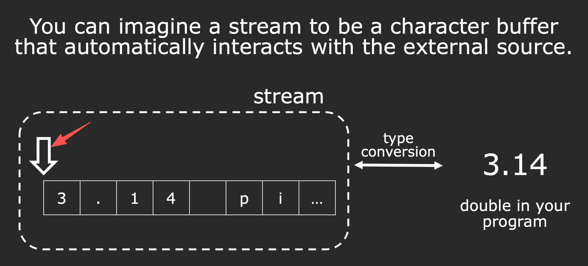
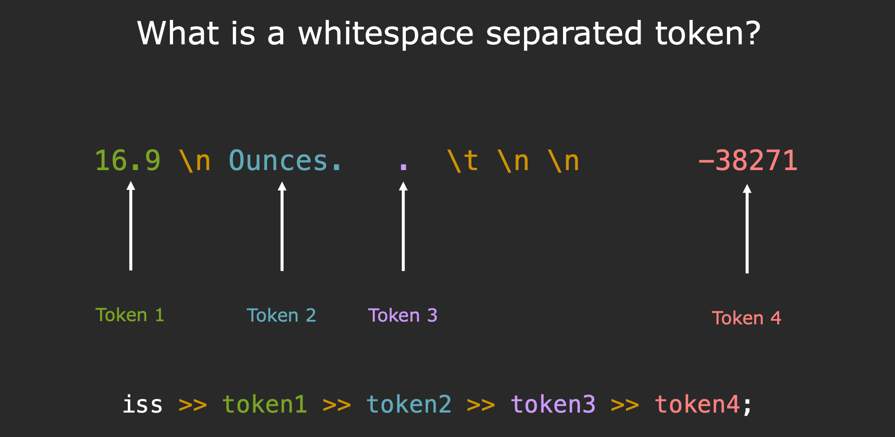
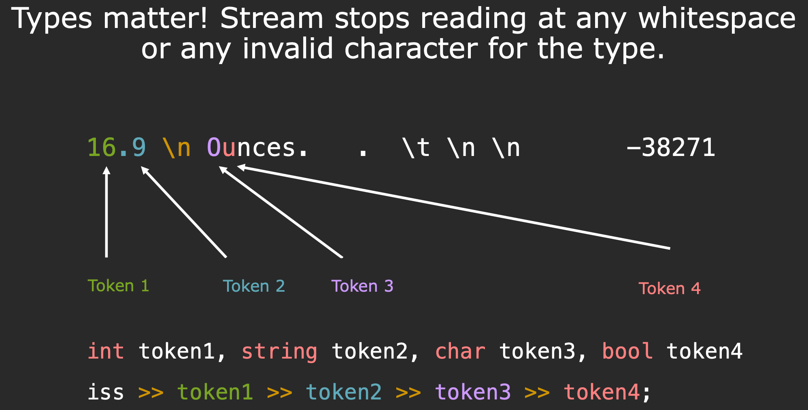

主要的笔记内容针对于C++相关的内容，主要针对的课程为Stanford CS106L (2020)的笔记，主要为后面的xv6写的前置笔记知识
Lecture 1: Streams I
Streams 主要的作用就是：外部设备 ↔ （字符缓冲区）stream ↔ 你的变量（double、int、struct）
stringstream
std::istringstream: 输入字符串流（从string中按类型提取）std::ostringstream: 输出字符串流（往里面放入各种类型，得到string类型）std::stringstream: 既能读又能写
#include <iostream>
#include <sstream>
int main()
{
// “16.9 Ounces”, pos at front
std::istringstream iss("16.9 Ounces");
double value;
std::string unit;
iss >> value >> unit;
std::cout << "Value: " << value << ", Unit: " << unit << std::endl;
return 0;
}
// Value: 16.9, Unit: Ounces
上面的例子可以看到输入字符串流中的iss -> 16.9 Ounces后面根据类型进行分类，因为中间遇见了空格进行了两个位置进行分割
// “Ito En Green Tea ”, pos at front
std::ostringstream oss("Ito En Green Tea ");
oss << 16.9 << " Ounce";
std::cout << oss.str() << std::endl;
// 16.9 Ounceen Tea
上面的例子中的输出字符串流，指针进行因为是在字符串的最开始的位置开始的，所以内容会进行覆盖，这里就和PPT中的一个位置是一样的

如果想从字符串的最后面的位置开始进行拼接，可以使用方式ate或者直接使用+
// “Ito En Green Tea ”, pos at back
std::ostringstream oss("Ito En Green Tea ", std::stringstream::ate);
oss << 16.9 << " Ounce";
std::cout << oss.str() << std::endl;
std::string valuestr = "16.9";
std::string result = "Ito En Green Tea " + valuestr + " Ounce";
std::cout << result << std::endl;
//Ito En Green Tea 16.9 Ounce
//Ito En Green Tea 16.9 Ounce
stringstream formatted i/o（» / «）
<<：把变量转成字符，用于将数据推送到流对象中
>>：从缓冲区读取下一个 token，按变量类型解析

什么属于空白分隔符：空格，\t，\n等等可以被隔开的片段
//16.9 Ounces . -38271
std::cout << "Enter a string: ";
std::string input;
std::getline(std::cin, input);
std::istringstream iss(input);
double token1;
std::string token2;
char token3;
bool token4;
iss >> token1 >> token2 >> token3 >> token4;
std::cout << "Token 1: " << token1 << std::endl;
std::cout << "Token 2: " << token2 << std::endl;
std::cout << "Token 3: " << token3 << std::endl;
std::cout << "Token 4: " << token4 << std::endl;
//Enter a string: 16.9 Ounces . -38271
//Token 1: 16.9
//Token 2: Ounces
//Token 3: .
//Token 4: 1

#include <iostream>
#include <sstream>
int main()
{
//16.9 Ounces . -38271
std::cout << "Enter a string: ";
std::string input;
std::getline(std::cin, input);
std::istringstream iss(input);
int token1;
std::string token2;
char token3;
bool token4;
iss >> token1 >> token2 >> token3 >> token4;
std::cout << "Token 1: " << token1 << std::endl;
std::cout << "Token 2: " << token2 << std::endl;
std::cout << "Token 3: " << token3 << std::endl;
std::cout << "Token 4: " << token4 << std::endl;
return 0;
}
上面的例子中写入了cin的情况后面的lecture中会提到，正常的cin遇见空格就会停止读取，使用getline的话遇见的是\n，上面输入的是16.9 Ounces . -38271，那么通过istringstream把字符串包成一个输入流，去解析的时候
token1: 读int看到'1''6''.''9'，'.'对 int 无效，于是停在 ‘.’，结果token1 = 16token2: 跳过'.'前的空白，从'.'开始读string，string对'.'是合法字符，会读到"."（后面空白为止）token3: 跳过空白，读下一个char，得到'O'token4: 读取下一个那么就是U
stringstream positioning functions
oss.str()：把当前缓冲区内容取成std::stringtellp()/seekp()：输出位置指针（put pointer）tellg()/seekg()：输入位置指针（get pointer）
#include <iostream>
#include <sstream>
int main()
{
std::ostringstream oss("ABCDEF");
oss.seekp(3);
oss << "Z";
auto pos = oss.tellp();
std::cout << "Position before writing Z: " << pos << " " << oss.str() << std::endl;
return 0;
}
stringToInteger and state bits
-
goodbit (G)：一切正常，可以继续读写 -
failbit (F)：上一次操作失败（比如类型不匹配），之后所有操作都会被卡死 -
eofbit (E)：读到了缓冲区结尾（EOF） -
badbit (B)：严重错误（IO 崩溃、设备坏了之类）
这里了解了一个好的编程方式，主要针对于if else可以直接转化为? :表达式，看起来简洁也好很多
void printStateBits(const istream& iss) {
cout << "State bits: ";
cout << (iss.good() ? "G" : "-");
cout << (iss.fail() ? "F" : "-");
cout << (iss.eof() ? "E" : "-");
cout << (iss.bad() ? "B" : "-");
cout << '\n';
}
对于要实现的stringToInteger如下所示：
#include <iostream>
#include <sstream>
int stringtoint(const std::string& str)
{
std::istringstream iss(str);
int value;
char remain;
if (!(iss >> value) || (iss >> remain)) {
throw std::domain_error("not a pure integer");
}
return value;
}
int main()
{
std::cout << "input str: ";
std::string input;
std::getline(std::cin, input);
int number = stringtoint(input);
std::cout << "Converted integer: " << number << std::endl;
return 0;
}